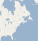
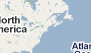
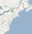
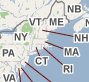
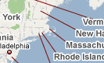
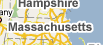

setAutoWaitTimeout(5000) switchApp("Firefox.app") type("t", KEY_META) type("maps.google.com\n") thumb = find()[0] dragDrop(thumb, [thumb.x, thumb.y+1000]) maps = [, , , , , , ] for m in maps: doubleClick(m) popup("Here we are!")